<!DOCTYPE html>
<html lang="zh-TW">
<!-- head 開始 -->
<head>
    <meta charset="UTF-8">
    <meta name="viewport" content="width=device-width, initial-scale=1.0">
    <script src="https://kit.fontawesome.com/8d42bfc726.js" crossorigin="anonymous"></script>
    <link rel="stylesheet" href="https://stackpath.bootstrapcdn.com/bootstrap/4.4.1/css/bootstrap.min.css" integrity="sha384-Vkoo8x4CGsO3+Hhxv8T/Q5PaXtkKtu6ug5TOeNV6gBiFeWPGFN9MuhOf23Q9Ifjh" crossorigin="anonymous">
    <link rel="stylesheet" href="assets/style/all.css">
    <link href="https://fonts.googleapis.com/css2?family=Julius+Sans+One&family=Roboto:wght@100;300;400;500&display=swap" rel="stylesheet">
    <link rel="icon" href="assets/images/layout/header/chr_D.svg" type="image/x-icon">
    <!-- X-UA-Compatible設置IE兼容模式，什麼版本IE 就用什麼版本的標準模式 開始 -->
    <meta http-equiv="X-UA-Compatible" content="IE=edge">
    <!-- X-UA-Compatible設置IE兼容模式，什麼版本IE 就用什麼版本的標準模式 結束 -->
    <!-- 聲明我的 HTML 使用了 XML Friends Network (XFN) 微格式 開始 -->
    <link rel="profile" href="http://gmpg.org/xfn/11">
    <!-- 聲明我的 HTML 使用了 XML Friends Network (XFN) 微格式 結束 -->
    <!-- Safari在讀取網頁時就會知道我們希望這個網頁有原生APP的特性(像是在手機螢幕有自己的icon等等) 開始 -->
    <meta name="mobile-web-app-capable" content="yes">
    <meta name="apple-mobile-web-app-capable" content="yes">
    <meta name="apple-mobile-web-app-title" content="台北婚宴-郊區戶外婚禮場地｜DCT Wedding 拾夢西式婚禮">
    <!-- Safari在讀取網頁時就會知道我們希望這個網頁有原生APP的特性(像是在手機螢幕有自己的icon等等) 結束 -->
    
    <title>台北婚宴-郊區戶外婚禮場地｜DCT Wedding 拾夢西式婚禮</title>
    <meta name="description" content="美國渡假村、BY33美軍俱樂部、納美花園、優聖美地、中國麗緻、Angels’ Share Cafe 天使分享咖啡廳、南方莊園里昂廳，郊區婚禮、西式婚禮">
    <!-- 加上這段標籤跟沒加的道理是一樣的，等於搜尋引擎將正常索引及檢索，指定 -1 代表網頁摘要長度不限 開始 -->
    <meta name="robots" content="index, follow">
    <meta name="googlebot" content="index, follow, max-snippet:-1, max-image-preview:large, max-video-preview:-1">
    <meta name="bingbot" content="index, follow, max-snippet:-1, max-image-preview:large, max-video-preview:-1">
    <!-- 加上這段標籤跟沒加的道理是一樣的，等於搜尋引擎將正常索引及檢索，指定 -1 代表網頁摘要長度不限 結束 -->
    <link rel="canonical" href="http://dctwedding.com/blog_2019-04-13/">
    <meta property="og:locale" content="zh_TW">
    <meta property="og:type" content="article">
    <meta property="og:title" content="台北婚宴-郊區戶外婚禮場地｜DCT Wedding 拾夢西式婚禮">
    <meta property="og:description" content="美國渡假村、BY33美軍俱樂部、納美花園、優聖美地、中國麗緻、Angels’ Share Cafe 天使分享咖啡廳、南方莊園里昂廳，郊區婚禮、西式婚禮">
    <meta property="og:url" content="http://dctwedding.com/blog_2019-04-13/">
    <meta property="og:site_name" content="DCT Wedding 拾夢婚顧 西式婚禮 戶外婚禮">
    <meta property="article:modified_time" content="2020-06-26T15:19:33+00:00">
    <meta property="og:image" content="http://dctwedding.com/assets/resized_photo/blog_2019-04-13/台北婚宴，戶外婚禮場地-1.jpg">
    <meta property="og:image:width" content="1200">
    <meta property="og:image:height" content="630">
    <meta name="twitter:card" content="summary_large_image">
    <!-- google-analytics js 開始 -->
    <!-- google-analytics js 結束 -->
    <!-- fb js 開始 -->
    <!-- fb js 結束 -->
</head>
<!-- head 結束 -->

<body>
  <header class="header">
    <nav id="navApp" class="navbar navbar-expand-lg navbar-light bg-yellow fixed-top pt-3 pb-2 pt-md-4 pb-md-3"> <!--fixed-top-->
      <div class="container px-3">
          <a class="navbar-brand d-lg-none" href="index.html">
              
          </a>
          <button class="navbar-toggler" type="button" data-toggle="collapse" data-target="#navbarNavAltMarkup" aria-controls="navbarNavAltMarkup" aria-expanded="false" aria-label="Toggle navigation">
              <span class="navbar-toggler-icon"></span>
          </button>
          
          <div class="collapse navbar-collapse navbar-nav-left" id="navbarNavAltMarkup">
            <ul class="navbar-nav header-nav d-flex align-items-center align-items-lg-end">
                <li class="nav-item mb-lg-0 mb-4">
                    <a class="nav-link text-center d-flex flex-column" href="aboutUs.html">
                        About<span class="">關於我們</span>
                    </a>
                </li>
                <li class="nav-item mb-lg-0 mb-4">
                    <a class="nav-link text-center d-flex flex-column" href="service.html">
                        Service<span class="">服務項目</span>
                    </a>
                </li>
                <li class="nav-item mb-lg-0 mb-4">
                    <a class="nav-link text-center d-flex flex-column" href="portfolio.html">
                        Portfolio<span class="">作品錦集</span>
                    </a>
                </li>
                <li class="nav-item d-none d-lg-block mb-lg-0 mb-4">
                    <a class="navbar-brand" href="index.html">
                        
                    </a>
                </li>
                <li class="nav-item mb-lg-0 mb-4">
                    <a class="nav-link text-center d-flex flex-column" href="blog.html">
                        Story<span class="">婚顧故事</span>
                    </a>
                </li>
                <li class="nav-item mb-lg-0 mb-4">
                    <a class="nav-link text-center d-flex flex-column" href="feedback_fb.html">
                        Feedback<span class="">新人回饋</span>
                    </a>
                </li>
                <li class="nav-item mb-lg-0 mb-4">
                    <a class="nav-link text-center d-flex flex-column" href="survey.html">
                        Contact<span class="">線上預約</span>
                    </a>
                </li>
            </ul>
        </div>
        
      </div>
    </nav>
  </header>

  
<div class="post-content-inner container" style="text-align: center;">
<h1 class="post-title entry-title mb-4" style="text-align: center;font-size: 1.25rem;">台北婚宴｜郊區戶外婚禮場地</h1>
<div class="entry-content">
<!-- <p><span style="color: #ffffff;">台北 戶外婚禮 場地推薦</span></p>
<p><span style="color: #ffffff;">陽明山、淡水、桃園等台北郊區</span></p> -->
<p><span style="color: #879460;">郊區｜Angels’ Share Cafe 天使分享咖啡廳</span></p>
<p>台北市士林區仰德大道二段11巷11號</p>
<p></p>
<p>200人，戶外證婚｜室內宴客</p>
<p><span style="color: #879460;">小編加碼推薦｜</span>與美麗的各各他浸信會白色教堂相鄰，有片大草皮可舉辦證婚儀式</p>
<p>也非常適合在戶外宴客喔！</p>
<p> </p>
<p><span style="color: #879460;">郊區｜優聖美地</span></p>
<p>新北市新店區屈尺里頂石厝路10號</p>
<p>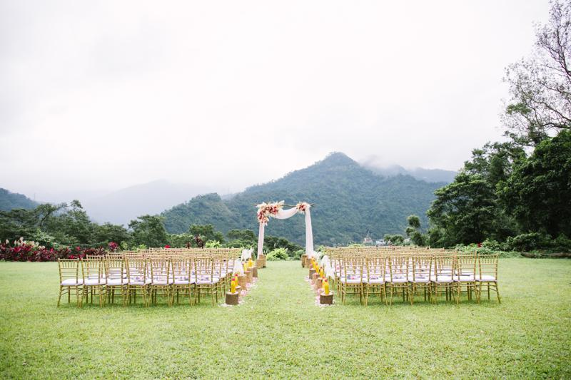</p>
<p>150-200人，戶外證婚｜室內宴客</p>
<p><span style="color: #879460;">小編加碼推薦｜</span>群山環繞、綠草輕輕的場地，推薦給喜愛大自然的你</p>
<p>除了400坪的大草皮，後方還有一棟歐式鄉村別墅，這樣絕美的場地小編怎能不推啊！</p>
<p> </p>
<p><span style="color: #879460;">郊區｜納美花園</span></p>
<p>台北市士林區仰德大道三段250巷11弄51號</p>
<p></p>
<p>200-250人，戶外證婚＋半戶外宴客</p>
<p><span style="color: #879460;">小編加碼推薦｜</span>納美花園在戶外婚禮的場地中已經相當有名氣，適合人數較高的婚禮喔！</p>
<p>擁有約1000坪的草地，來辦一場如同置身世外桃源般的夢幻婚禮吧！</p>
<p> </p>
<p><span style="color: #879460;">郊區｜真愛桃花源</span></p>
<p>台北市士林區華岡路30號</p>
<p>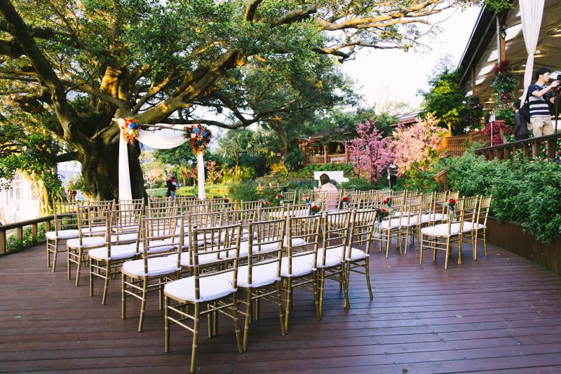</p>
<p>200-300人，戶外證婚｜室內宴客</p>
<p><span style="color: #879460;">小編加碼推薦｜</span>“真愛桃花源”位處文化大學旁陽明山麓，為占地 7000 坪的歐式花園</p>
<p>喜歡歐式戶外婚禮的新人，小編特別推薦這個場地給你！</p>
<p> </p>
<p><span style="color: #879460;">郊區｜美國渡假村</span></p>
<p>台北市士林區凱旋路61巷2弄2號</p>
<p>
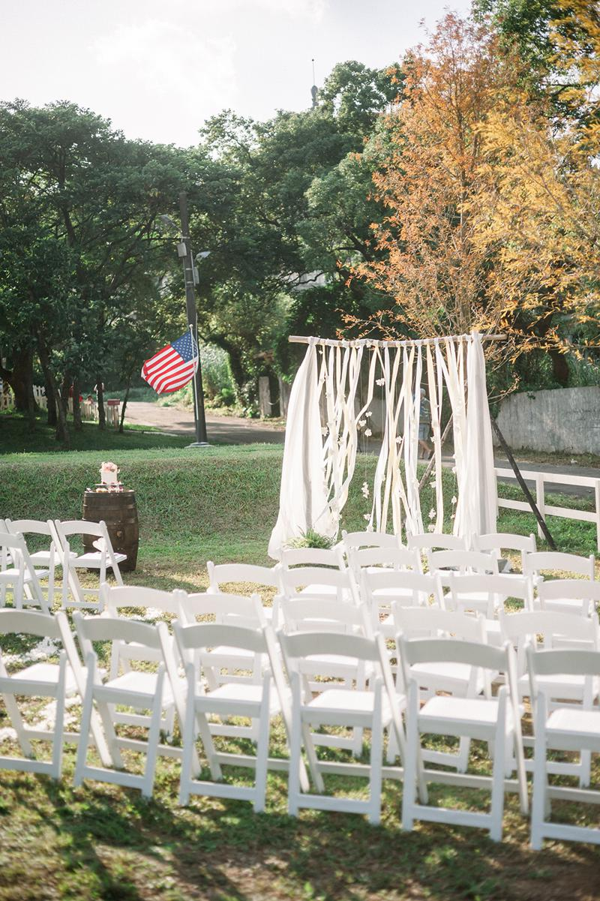</p>
<p>室內宴客80人、戶外宴客150人｜戶外證婚</p>
<p class="big"><span style="color: #879460;">小編加碼推薦｜</span>“台北的80年代風格渡假村”為早期美軍在台的宿舍群整修而成</p>
<p class="big">在群山環繞、四季分明的華岡勝景中舉辦美式婚禮，讓新人和賓客不用出國也能感受美國風情，是不是該推！</p>
<p> </p>
<p><span style="color: #879460;">郊區｜中國麗緻</span></p>
<p>台北市士林區格致路237號</p>
<p>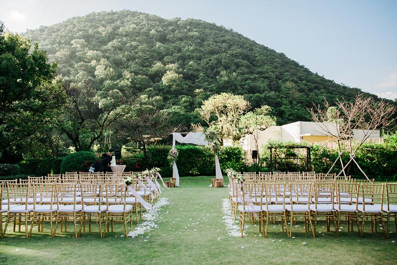</p>
<p>150-200人，戶外證婚｜室內宴客</p>
<p><span style="color: #879460;">小編加碼推薦｜</span>陽明山上的絕美場地，戶外草皮區獨立且隱密，背景乾淨拍攝起來更美麗</p>
<p>飯店同時擁有溫泉及泳池，在池畔舉辦婚禮也非常有氣氛喔！</p>
<p> </p>
<p><span style="color: #879460;">郊區｜BY33美軍俱樂部</span></p>
<p>台北市士林區凱旋路49號</p>
<p>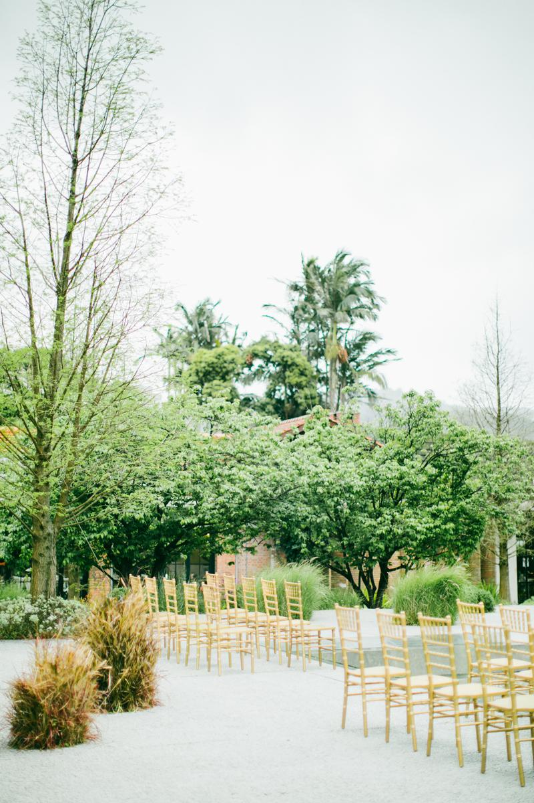
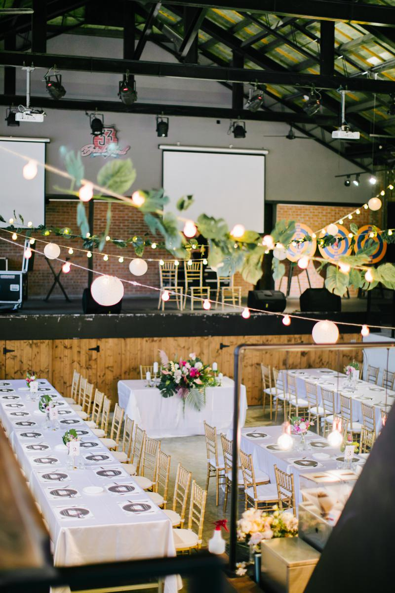</p>
<p>80-200人，戶外證婚｜室內宴客</p>
<p><span style="color: #879460;">小編加碼推薦｜</span><span lang="EN-US">1950 </span>年代的美軍俱樂部是留台美軍的聯誼、娛樂場所，也因為是黑膠唱片的年代</p>
<p>在這會看到許多黑膠唱片的佈置，喜歡懷舊氣氛的新人別錯過了！</p>
<p> </p>
<p><span style="color: #879460;">郊區｜淡水la villa</span></p>
<p>新北市淡水區中正路261號</p>
<p>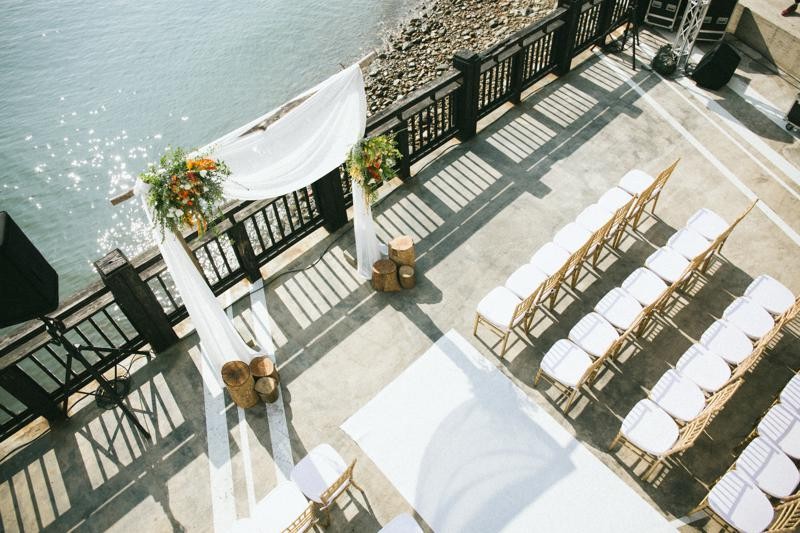</p>
<p>100-120人，戶外證婚｜室內宴客</p>
<p><span style="color: #879460;">小編加碼推薦｜</span>位於淡水河畔的歐式景觀餐廳，兩層樓的用餐環境，內部裝潢乾淨又富有設計感</p>
<p>在戶外區舉辦證婚儀式，陽光灑在水面上閃閃動人的是不是相當美麗！</p>
<p> </p>
<p><span style="color: #879460;">郊區｜淡水福容大飯店</span></p>
<p>新北市淡水區觀海路83號</p>
<p>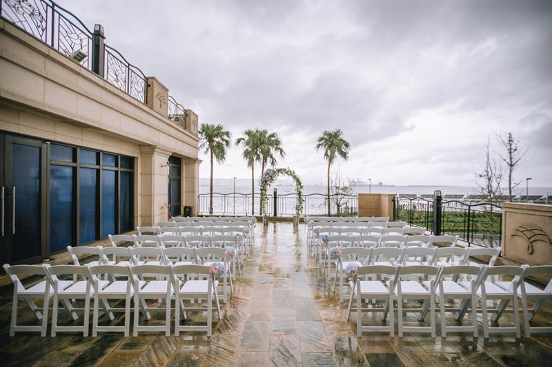</p>
<p>15-20桌，戶外證婚｜室內宴客</p>
<div><span style="color: #879460;">小編加碼推薦｜</span>坐擁絕美景緻，有＂愛之船＂美譽的獨特郵輪造型外觀</div>
<div>戶外也有露台可以舉辦證婚儀式喔！</div>
<p> </p>
<p><span style="color: #879460;">郊區｜水灣Bali</span></p>
<p>新北市八里區觀海大道39號</p>
<p>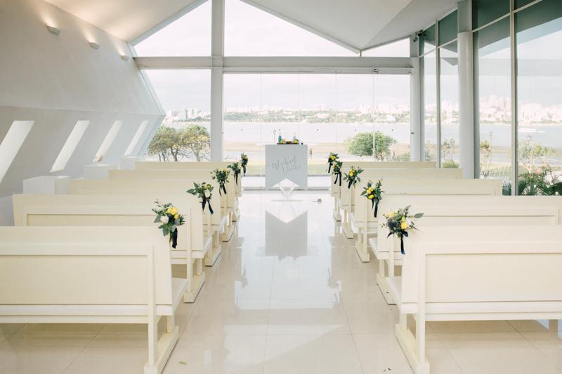</p>
<p>180-200人，教堂證婚｜戶外證婚、舞台｜室內宴客</p>
<p><span style="color: #879460;">小編加碼推薦｜</span>八里水灣Bali專屬的「水之心」禮堂，讓人彷彿置身於異國</p>
<p>於白淨的禮堂的說出彼此的誓言，讓這一刻成為一輩子難以忘懷的美麗回憶</p>
<p> </p>
<p><span style="color: #879460;">桃園-饗悅食尚會館</span></p>
<p>桃園市蘆竹區大竹北路173號</p>
<p>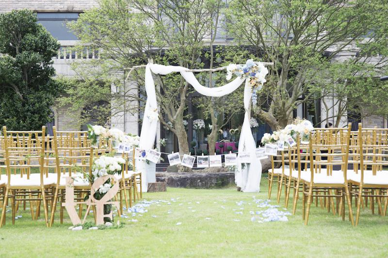</p>
<p>200人以上，戶外證婚＋室內/戶外宴客</p>
<p><span style="color: #879460;">小編加碼推薦｜</span>饗悅為歐式巴洛克古堡建築，園內樹林環抱、擁有千坪庭院</p>
<p>除了美麗的建築特色，饗悅最吸引人的地方就是這片草地啦！也是許多新人選擇它的原因！</p>
<p> </p>
<p><span style="color: #879460;">桃園-綠風草原</span></p>
<p>桃園市平鎮區長安路216巷168號</p>
<p>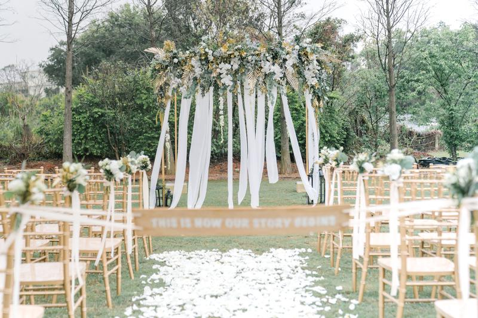</p>
<p>120-150人，戶外證婚＋室內宴客</p>
<p><span style="color: #879460;">小編加碼推薦｜</span>綠風草原為高爾夫球場改建，想當然草皮區也是又大又寬闊，</p>
<p>一旁還有個大池塘呢！這邊的婚宴通常都是以西餐buffet為主喔！</p>
<p> </p>
<p><span style="color: #879460;">桃園-南方莊園里昂廳（新）</span></p>
<p>桃園市中壢區樹籽路7號</p>
<p>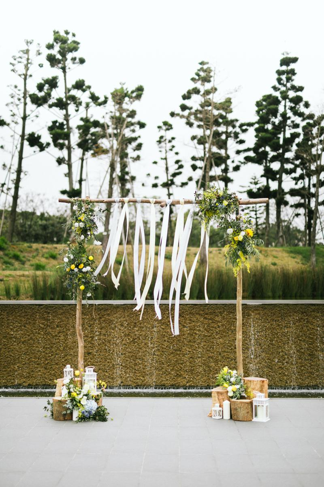
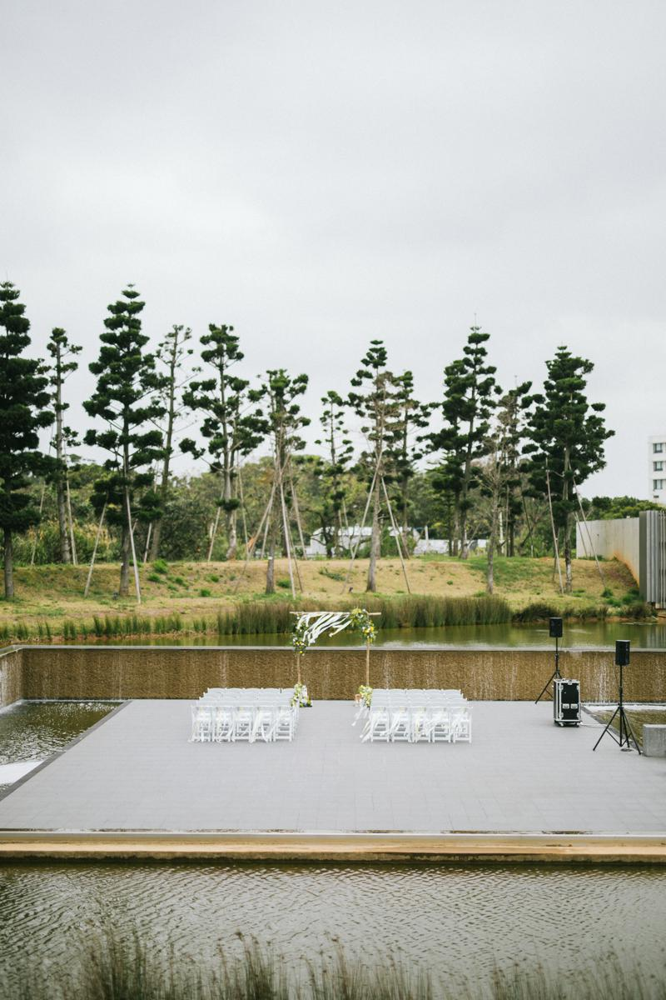</p>
<p>20-60桌，戶外證婚＋室內宴客</p>
<p><span style="color: #879460;">小編加碼推薦｜</span>里昂宴會廳以清水模為主題，乾淨無過多華麗裝飾，相信喜歡西式婚禮的你也一定會喜歡這裏！</p>
<p>戶外水平台供新人證婚使用，在清澈水平面上，群樹環繞，讓人彷彿置身於都市中的叢林，真的必須推薦</p>
<div class="mod" data-attrid="kc:/collection/knowledge_panels/has_phone:phone" data-hveid="CBoQAA" data-md="1006" data-ved="2ahUKEwj5xPfUqpLhAhVLHKYKHToFDl0QkCkwE3oECBoQAA" lang="zh-Hant-TW">
<div class="Z1hOCe"></div>
</div>
<p>
</p><div class="themify_builder_content themify_builder_content-3016 themify_builder themify_builder_front" data-postid="3016" id="themify_builder_content-3016">
<!-- module_row -->
<div class="themify_builder_row themify_builder_3016_row module_row module_row_0 clearfix gutter-default col_align_top" data-column-alignment="col_align_top" data-equal-column-height="" data-gutter="gutter-default">
<div class="row_inner_wrapper">
<div class="row_inner">
<div class="col-full first tb-column empty-column tb_3016_column module_column_0 module_column">
<div class="tb-column-inner">

				
				
					 
				
			</div><!-- /.tb-column-inner -->
</div>
<!-- /.tb-column -->
</div>
<!-- /row_inner -->
</div>
<!-- /row_inner_wrapper -->
</div>
<!-- /module_row -->
</div>
<!-- /themify_builder_content -->
</div><!-- /.entry-content -->
</div>

  <footer>
    <div class="container">
        <ul class="footerContactUsList">
            <li class="footerContactUsItem">
                <ul class="socialMedia">
                    <li class="pr-4">
                        <a target="_blank" href="https://www.facebook.com/dctwedding/?fref=ts">
                            
                        </a>
                    </li>
                    <li class="pr-4">
                        <a target="_blank" href="https://www.pinterest.com/dctweddingtw/">
                            
                        </a>
                    </li>
                    <li class="pr-4">
                        <a target="_blank" href="https://instagram.com/dctwedding?igshid=1rvf6aq8jeguq">
                            
                        </a>
                    </li>
                    <li class="pr-4">
                        <a target="_blank" href="https://line.me/R/ti/p/%40tzu6169y">
                            
                        </a>
                    </li>
                </ul>
            </li>
            <li class="footerContactUsItem">
                <a href="tel:+886285012909">02-8501-2909</a>
            </li>
            <li class="footerContactUsItem">
                <a href="https://goo.gl/maps/p3oqFeDBfSPU7pMfA" target="_blank">104台北市中山區敬業三路161巷27號</a>
            </li>
            <li class="footerContactUsItem">
                <p>Copyright © 2020 DCT Wedding All rights reserved.</p>
            </li>
        </ul>
        

    </div>
  </footer>

  <!--popover js-->
  <!-- <script src="https://unpkg.com/@popperjs/core@2/dist/umd/popper.js"></script> -->


  <!--bootstrap js-->
  <script src="https://code.jquery.com/jquery-3.4.1.slim.min.js" integrity="sha384-J6qa4849blE2+poT4WnyKhv5vZF5SrPo0iEjwBvKU7imGFAV0wwj1yYfoRSJoZ+n" crossorigin="anonymous"></script>
  <script src="https://cdn.jsdelivr.net/npm/popper.js@1.16.0/dist/umd/popper.min.js" integrity="sha384-Q6E9RHvbIyZFJoft+2mJbHaEWldlvI9IOYy5n3zV9zzTtmI3UksdQRVvoxMfooAo" crossorigin="anonymous"></script>
  <script src="https://stackpath.bootstrapcdn.com/bootstrap/4.4.1/js/bootstrap.min.js" integrity="sha384-wfSDF2E50Y2D1uUdj0O3uMBJnjuUD4Ih7YwaYd1iqfktj0Uod8GCExl3Og8ifwB6" crossorigin="anonymous"></script>

  
  <script src="assets/js/all.js"></script>
  <!-- emailjs -->
  <script type="text/javascript" src="https://cdn.emailjs.com/sdk/2.3.2/email.min.js"></script>
  
  <!-- DCT FB 開始 -->
  <!-- Load Facebook SDK for JavaScript -->
    <div id="fb-root"></div>
    <script>
        window.fbAsyncInit = function() {
        FB.init({
        xfbml : true,
        version : 'v7.0'
        });
        };

        (function(d, s, id) {
        var js, fjs = d.getElementsByTagName(s)[0];
        if (d.getElementById(id)) return;
        js = d.createElement(s); js.id = id;
        js.src = 'https://connect.facebook.net/zh_TW/sdk/xfbml.customerchat.js';
        fjs.parentNode.insertBefore(js, fjs);
        }(document, 'script', 'facebook-jssdk'));
    </script>

    <!-- Your Chat Plugin code -->
    <div class="fb-customerchat"
    attribution=setup_tool
    page_id="686068714820710"
    theme_color="#d4a88c"
    logged_in_greeting="Hello, 有什麼想法需求都可以與我們討論喔！"
    logged_out_greeting="Hello, 有什麼想法需求都可以與我們討論喔！">
    </div>
  <!-- DCT FB 結束 -->
</body>
</html>